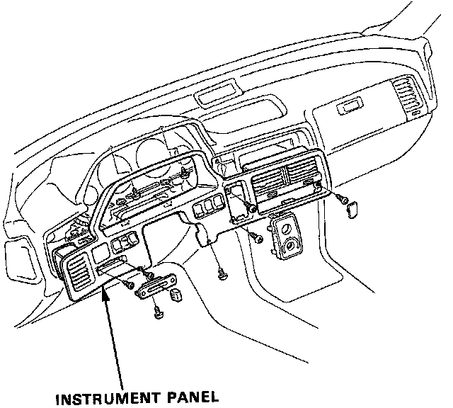
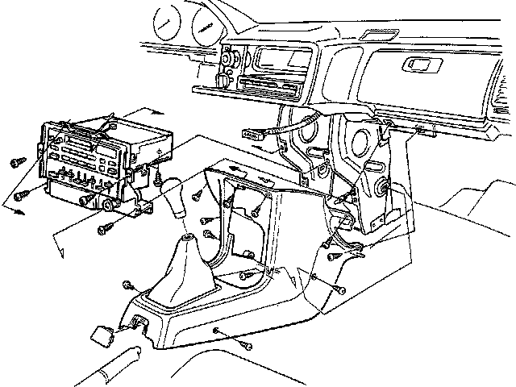
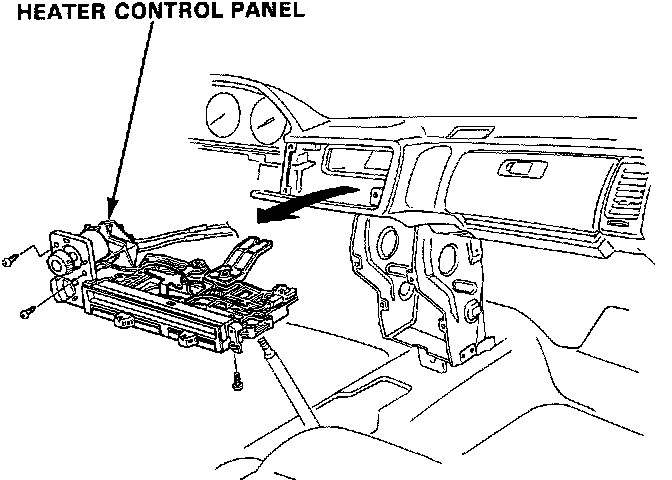

Heater Control Panel Replacement
Heater Control Panel Replacement
1. Remove the instrument panel.

2. Remove the front console and radio/cassette player.
3. Disconnect the cables (4) at the heater assembly.

4. Remove the self-tapping screws (3), pull out the heater control panel, disconnect the wire harness connectors. then remove the heater control.
5. Install in the reverse order of removal, reconnect the cables, making sure they are properly adjusted.